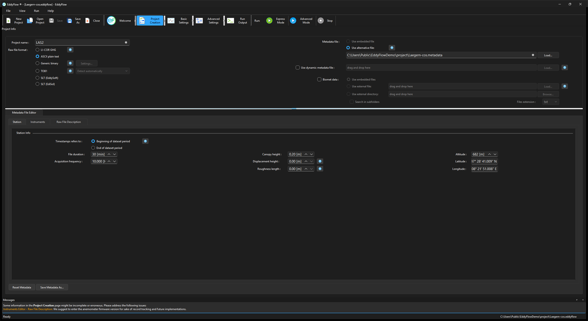
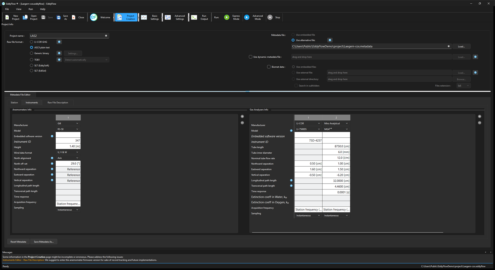
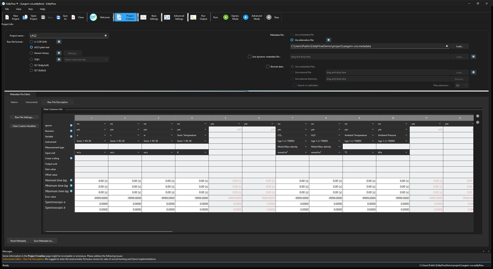
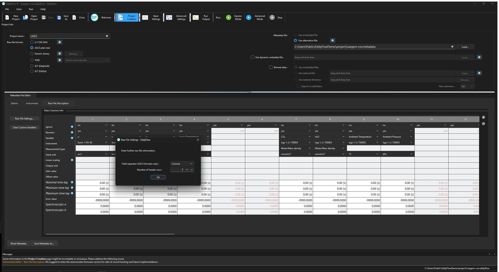

Metadata file editor¶
The Metadata File Editor is part of the Project Creation page. It is used to create and edit metadata for the processing project. Metadata may include site information, station information, and information that describes how data are arranged in data files. If you are processing .ghg files, you may use the Metadata File Editor to modify the embedded metadata files. If you are processing other file types, use the Metadata File Editor to enter and save metadata. There are three tabs: Station, Instruments, and Raw File Description.
Station¶
Under this tab, provide information that describes the research station. This information will be used for every data file processed with this metadata file.

Timestamp refers to: Select whether the timestamp provided in raw file names refers to the beginning or to the end of the data interval. See Beginning of dataset.
- beginning of averaging period: Select this option if timestamps in raw file names refer to the beginning of the data interval.
- end of averaging period: Select this option if timestamps in raw file names refer to the end of the data interval.
Note
Timestamps on EddyFlow output files always refer to the end of the averaging interval.
File duration: Enter the time span covered by each raw file.
Acquisition frequency: Referred to as update rate or output rate in the LI-7500A/RS/DS, LI-7200/RS, or LI-7700 software. Enter the acquisition frequency (number of samples per second) used to collect raw data.
Altitude: Elevation above sea level to the base of the flux tower.
Canopy height: Effective average distance between the ground and the top of the plant canopy. Also referred to as aerodynamic canopy height.
Displacement height: Zero plane displacement height is the average level at which elements of the plant community absorb momentum. If left blank, this parameter is automatically estimated based on canopy height. See Displacement height.
Roughness length: Canopy roughness length is a quantification of the surface roughness. If left blank, this parameter is automatically estimated, based on canopy height. See Roughness length.
Latitude: Latitude at the site. Use N and S for north and south latitudes, respectively.
Longitude: Longitude at the site. Use E and W for east and west longitudes, respectively.
Reset Metadata: Reset the default settings in the Metadata File Editor. Does not affect other settings of the project.
Save metadata as...: Save the metadata file with a new file name. To save the processing project, use the file menu or toolbar.
Instruments¶
Enter information that describes all anemometer(s) and gas analyzer(s) used at the EC station to collect the data you want to process.

Anemometer Information¶
Describe the anemometers used at the EC station to collect wind and sonic temperature data you want to process.
Manufacturer: Specify the manufacturer of the anemometer among those supported. Choose Other for any manufacturer not explicitly listed. This field is mandatory.
Model: Identify the model of the anemometer. Choose Generic Anemometer for any model not explicitly listed. This field is mandatory.
Metek anemometers
The Metek uSonic-3 Class A MP and uSonic-3 Cage MP are written to the metadata file with the keys the processing engine reads, usoni3_classa_mp_1 and usoni3_cage_mp_1 (the number is the instrument order number). Earlier interface versions wrote the short spellings u3amp and u3cagemp, which the engine refuses (Fatal error 23, "Invalid metadata"). Metadata files carrying the old spellings are still read and are rewritten with the correct ones when you save. A genuine .ghg file that contains a Metek anemometer used to open with no anemometer model selected, and saving it wrote an empty instr_1_model=; the model is now recognized. A CSAT3C (csi_csat3c) is understood by the engine and by the extended .ghg format, but the interface does not yet offer it as a model, so a site with a CSAT3C cannot be configured in the Metadata File Editor (see Extended .ghg files).
Software version: Identify the firmware (embedded software) version that was running on the selected anemometer. For Gill WindMaster™ and WindMaster Pro models, the firmware version is required in order to select the proper Angle of Attack correction. Storing other anemometers' firmware versions is recommended for good record keeping. See Entering the sonic anemometer firmware version for more information.
Instrument ID: Enter an ID for the anemometer, to distinguish it from the other instruments. This is only for your records and providing it is optional.
Height: Enter the distance between the ground and the center of the device sampling volume. This field is mandatory.
Wind data format: Specify in which format the wind components are provided. This can be U, V, W; Polar and W; or axis velocities.
North alignment: For Gill anemometers, specify whether the spar or axis of the anemometer is oriented toward north. This field only applies to Gill anemometers.
North offset: Enter the anemometer's yaw offset with respect to local magnetic north, positive eastward (magnetic north as assessed with a compass, not corrected for declination). See North offset.
Northward separation: Specify the distance between the current anemometer and the reference anemometer, as measured horizontally along the north-south axis (the one you assess with a compass). The distance is positive if the current anemometer is placed to the north of the reference anemometer. The reference anemometer is the first one you describe. For this anemometer you cannot enter the separation and you find the string Reference. See Northward, eastward, and vertical separation.
Eastward separation:. Specify the distance between the current anemometer and reference anemometer, as measured horizontally along the east-west axis (the one you assess with a compass). The distance is positive if the current anemometer is placed to the east of the reference anemometer. The reference anemometer is the first one you describe. For this anemometer you cannot enter the separation and you find the string Reference. See Northward, eastward, and vertical separation.
Vertical separation: Specify the distance between the current anemometer and reference anemometer, as measured horizontally along the vertical axis. The distance is positive if the current anemometer is placed above the reference anemometer. The reference anemometer is the first one you describe. For this anemometer you cannot enter the separation and you find the string Reference. See Northward, eastward, and vertical separation.
Longitudinal path length (anemometer): Path length in the direction defined by any transducer pair. Consult the anemometer's specifications or user manual. See Longitudinal and transversal path lengths and time response.
Transversal path length (anemometer): Path length in the direction orthogonal to the longitudinal path length (e.g., as defined by the diameter of transducers). See Longitudinal and transversal path lengths and time response.
Time response (anemometer): Time response of the anemometer. Its inverse defines the maximum frequency of the atmospheric turbulence that the instrument is able to resolve. Consult the anemometer's specifications or user manual. See Longitudinal and transversal path lengths and time response.
Acquisition frequency: The rate at which this anemometer samples, if it is slower than the station's acquisition frequency. Leave it at the station's value unless the anemometer really is slower — an instrument with no rate of its own follows the station, so changing the station's acquisition frequency changes this one too. A slower instrument leaves gaps between its samples in the raw file, and stating its own rate here is what stops those gaps being counted as missing data.
Sampling: Whether this instrument reports the value at an instant or the mean over its own sampling interval. It matters only when the instrument is slower than the station: the vertical wind is then paired with each of its samples the same way, either one w at that instant or w averaged over the interval the sample closes. Pairing an averaged wind against a point-sampled gas biases the covariance, so Instantaneous is the default and Average is stated deliberately when it is chosen.
+ Add a new anemometer.
- Remove the currently selected anemometer.
Gas analyzers information¶
Describe gas analyzers used at the EC station to collect data you want to process.
Note
EddyFlow supports multiple gas analyzers and hygrometers at the same station, for a combined total of up to 64 gas channels across all instruments. If your station has several instruments measuring the same or different species (for example, two CO2/H2O analyzers, or a CO2/H2O analyzer plus a separate CH4 or N2O analyzer), describe each instrument as its own entry using the + button.
Manufacturer: Specify the manufacturer of the gas analyzer. For gas analyzers other than LI-COR, select Other. This field is mandatory.
Model: Identify the model of the gas analyzer. For gas analyzers other than LI-COR, select the appropriate typology. OP and CP stand for open path and closed path, respectively. See Model (gas analyzer).
Software version: For the LI-7500A/RS and LI-7200/RS CO2/H2O analyzers, identifies the embedded software version that was running on the LI-7550 Analyzer Interface Unit at the time data were collected.
Instrument ID: Enter an ID for the gas analyzer. This is only for your records and providing it is optional.
Height: Enter the distance between the ground and the center of the device sampling volume or inlet of the intake tube. This field is mandatory.
Tube length: Specify the length of the intake tube in centimeters. This field is mandatory for closed path instruments. Ignore it for open path instruments.
Tube inner diameter: Specify the inside diameter of the intake tube in centimeters. This field is mandatory for closed path instruments. Ignore it for open path instruments.
Nominal tube flow rate: Specify the flow rate in the intake tube expected during normal operation. This field is mandatory for closed path instruments. Ignore it for open path instruments.
Northward separation: Specify the distance between the center of the sample volume (or the inlet of the intake tube) of the current gas analyzer and the reference anemometer, as measured horizontally along the north-south axis (the one you assess with a compass). The distance is positive if the gas analyzer is placed to the north of the anemometer. See Northward, eastward, and vertical separation.
Eastward separation: Specify the distance between the center of the sample volume (or the inlet of the intake tube) of the current gas analyzer and the reference anemometer, as measured horizontally along the east-west axis (the one you assess with a compass). The distance is positive if the gas analyzer is placed to the east of the anemometer. See Northward, eastward, and vertical separation.
Vertical separation: Specify the distance between the center of the sample volume (or the inlet of the intake tube) of the current gas analyzer and the reference anemometer, as measured vertically. The distance is positive if the gas analyzer is above the anemometer. See Northward, eastward, and vertical separation.
Longitudinal path length (gas analyzer): Path length in the direction of the optical source. Consult analyzer's specifications or user manual. See Longitudinal and transversal path lengths and time response.
Transverse path length (gas analyzer): Path length in the direction orthogonal to the optical source. Consult the analyzer's specifications or user manual. See Longitudinal and transversal path lengths and time response.
Time response (gas analyzer): Time response of the gas analyzer. Its inverse defines the maximum frequency of the atmospheric turbulent concentration fluctuations that the instrument is able to resolve. Consult analyzer's specifications or user manual. See Longitudinal and transversal path lengths and time response.
Which analyzers have editable path lengths and time response
The three cells Longitudinal path length (gas analyzer), Transverse path length (gas analyzer) and Time response (gas analyzer) are editable for the generic open- and closed-path analyzers, the krypton and Lyman-α hygrometers, the Campbell Scientific EC150, IRGASON (analyzer half), EC155 and TGA200A, the MIRO analyzers (MGA1/5, MGA4/6, MGA9/10, MGAi-N2O) and the Aerodyne TILDAS. For these the processing engine reads the geometry stated in the metadata file. For every other model (the LI-COR analyzers) the geometry is built into the engine, and the cells stay greyed out because a number you could type there would be ignored. EC150, IRGASON and TILDAS were previously inconsistent: the EC150 and IRGASON showed a value that could not be changed, and the TILDAS cell could not be reached at all, although the engine used whatever the file said. State the real geometry for these instruments, because it enters the spectral correction directly.
Extinction coefficient of water, Kw: In Krypton or Lyman-α hygrometers, the extinction coefficients for water vapor, associated with the third-order Taylor expansion of the Lambert–Beer law around reference conditions (van Dijk et al. 2003).
Extinction coefficient of oxygen Ko: In Krypton or Lyman-α hygrometers, the extinction coefficients for oxygen, associated with the third-order Taylor expansion of the Lambert–Beer law around reference conditions (van Dijk et al. 2003).
Acquisition frequency: The rate at which this gas analyzer samples, if it is slower than the station's acquisition frequency. Leave it at the station's value unless the analyzer really is slower — an instrument with no rate of its own follows the station, so changing the station's acquisition frequency changes this one too. A slower instrument leaves gaps between its samples in the raw file, and stating its own rate here is what stops those gaps being counted as missing data.
Sampling: Whether this instrument reports the value at an instant or the mean over its own sampling interval. It matters only when the instrument is slower than the station: the vertical wind is then paired with each of its samples the same way, either one w at that instant or w averaged over the interval the sample closes. Pairing an averaged wind against a point-sampled gas biases the covariance, so Instantaneous is the default and Average is stated deliberately when it is chosen.
+ Add another gas analyzer.
- Remove the currently selected gas analyzer.
Raw file description¶
In this tab you describe the raw files, including their format and content. If needed, you can also provide scaling information to turn raw variables into physical units and estimation time lags for non-anemometric variables.

Ignore: Select yes to instruct EddyFlow to ignore a column (variable). Columns to be ignored include time stamps, line counters, etc.
Note
If a variable is not numeric, this must be specified even if you set yes in the ignore field.
Numeric: Select no to tell EddyFlow that a column (variable) is not purely numeric. Purely numeric variables are strings included within two consecutive field separators and containing only digits from 0 to 9 and, at most, the decimal point. Any other character makes a variable not numeric. For example, time stamps in the form of 2011-09-26 or times as 23:20:562 are not numeric variables.
Variable: Specify the variable that is contained in the current column of the raw files (or position, for binary files). Choose from the available list or type in a custom variable label.
Note
Custom variables created in the file description table of the Metadata Editor will be permanently available in the local computer for future use.
Instrument: Select the instrument that measured the current variable. Instruments listed here are those entered under the instruments tab.
Measurement type: Only applicable to gas concentrations. Enter the description of the concentration measurement: Molar/Mass density, Mole fraction (wet) or Mixing ratio (dry). For all other variables, either leave the field blank or select Other. Molar/Mass density is a measure of moles or mass per unit volume of air. Mole fraction (wet) is a measure of moles or mass per mole or mass of wet air. Mixing ratio (dry) is a measure of moles or mass per mole or mass of dry air. Measures of mass can be expressed as number of moles, grams, etc.
Watch the wet/dry basis
Much of the literature says "mole fraction" for what is really the dry mole fraction. That quantity is Mixing ratio (dry) here, not Mole fraction (wet). The choice changes the flux: a mixing ratio is already on a dry-air basis, so no WPL correction is applied to it, whereas a wet mole fraction gets one. Declaring a dry mole fraction as Mole fraction (wet) therefore applies a WPL correction that should not be applied, and the flux of that gas is off by the size of the water-vapor term. Earlier versions labelled the two entries plainly Mole fraction and Mixing ratio; only the display changed. The metadata file still stores mole_fraction and mixing_ratio, so existing files and projects read exactly as before. See Compensation for density fluctuations.
Input unit: Specify the units of the variable as it is stored in the raw file.
Linear scaling: Specify whether to perform a linear conversion to rescale data. Variables that are already in any of the supported physical units do not need to be rescaled. See Linear scaling.
Output unit: Only if you are doing a conversion, enter the output units (physical units after conversion). The following Gain and Offset values must be such that the input variable is converted into the selected output unit.
Gain value: Enter the gain (slope) of the linear relation between input and output units.
Offset value: Enter the offset (y-axis intercept) of the linear relation between input and output units.
Nominal time-lag: Enter the expected (nominal) time lag of the variable, with respect to the measurements of the anemometer that you plan to use for flux computation, as applicable. Time lags should be specified at least for gas concentrations and can be estimated based on instrument separation (open path) or on the sampling line characteristics and the flow rate (closed path). See Nominal, minimal, and maximum Time Lag.
Minimum time-lag: Enter the minimum expected time lag for the current variable, with respect to anemometric measurements.
Maximum time-lag: Enter the maximum expected time lag for the current variable, with respect to anemometric measurements.
Error value: The value this column carries when the instrument had no reading. -9999 by default, which EddyFlow always treats as missing — along with NaN, an unparseable word such as NA, and an empty field — so this only needs changing when the logger writes something else. Stated in the same unit as the column itself, since it is recognized in the raw file before any conversion.
Spectroscopic a and Spectroscopic b (col_<N>_spectro_a, col_<N>_spectro_b): Coefficients of the polynomial that removes the effect of water vapor on the absorption lines of a closed-path laser analyzer. When Remove the spectroscopic effect of water vapour is enabled (see Compensation for density fluctuations), each affected closed-path column is divided, sample by sample, by 1 + a·χq + b·χq², where χq is the water mole fraction (mol/mol) read at the same instant by the analyzer that measured that column (Peltola et al. 2014, after Chen et al. 2010). A column with a = b = 0, the default, is left untouched. The coefficients are spectroscopic only: the dilution by water vapor is handled separately by the density correction, so zero is the identity. a is not the linear Gain value above it, and b is not the Offset value; this is a separate, physically motivated correction. Some published coefficient sets fold the dilution term into the same polynomial. To use such a set, convert it first: the new a is the old a plus one, and the new b is the old b plus the old a plus one. Entering a dilution-inclusive set unchanged would count the dilution twice.
+ Add a variable.
- Remove a variable
Clear custom variables¶
This button resets the Metadata variables list to the default selection and removes any custom variables that you've added.
Note
Custom variables created in the file description table of the Metadata Editor will be permanently available in the local computer for future use.
Raw file settings¶

Field separator character: Specify the character that separates individual values within the same sample in the raw files.
Number of header rows: Enter the number of rows in the header of the file, if present. In most cases, the software will be able to filter away individual text lines that do not comply with the description provided here. Therefore, most files with a variable number of header lines are supported.
Behavior when metadata is read¶
Empty numeric settings. A number that is empty or cannot be parsed in a metadata file (for example error_value= or acquisition_frequency=) is read as the default for that setting, exactly as if the key were absent. Earlier versions read it as 0, which had real consequences: an empty error_value declared 0 to be the missing-data fill, so every genuine zero in that column was treated as missing; an empty acquisition frequency became 0 Hz; an empty path length became 0 m; an empty file duration became a zero-length file. Text settings are unchanged, because an empty string is a legitimate value for them. If you relied on an empty field meaning zero, write the 0 explicitly.
Corrupt .ghg files. When the interface reads the metadata embedded in a .ghg file and the archive cannot be extracted, it shows a warning titled Raw Data Unreadable ("The following LI-COR GHG file could not be extracted and may be corrupt:" followed by the file name) and stops. If the archive's biomet part cannot be extracted, the warning is titled Biomet Data Unreadable ("The following LI-COR GHG biomet file could not be extracted and may be corrupt:" followed by the file name). Earlier versions ignored the failure and either reported "no valid LI-COR GHG data" or, worse, read a metadata file left behind by a previously opened archive and silently showed the wrong site description. Remove or replace the named file and read the folder again.
Raw file name filter. The raw file name prototype used to skip files while filtering the list: after the first non-matching file was removed, the files following it were not tested, so non-matching files survived the filter. This inflated the number of files found and widened the detected date range. The filter now tests every file.